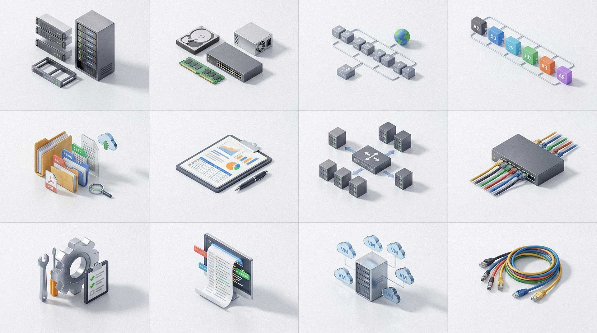
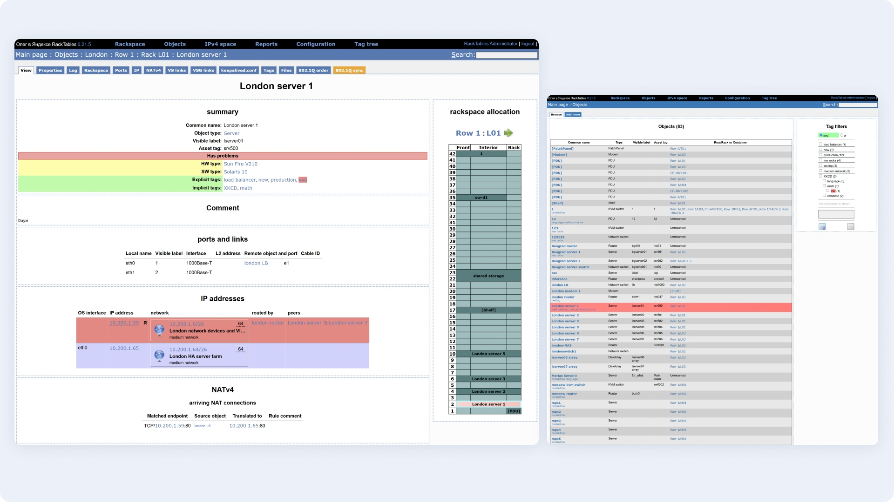
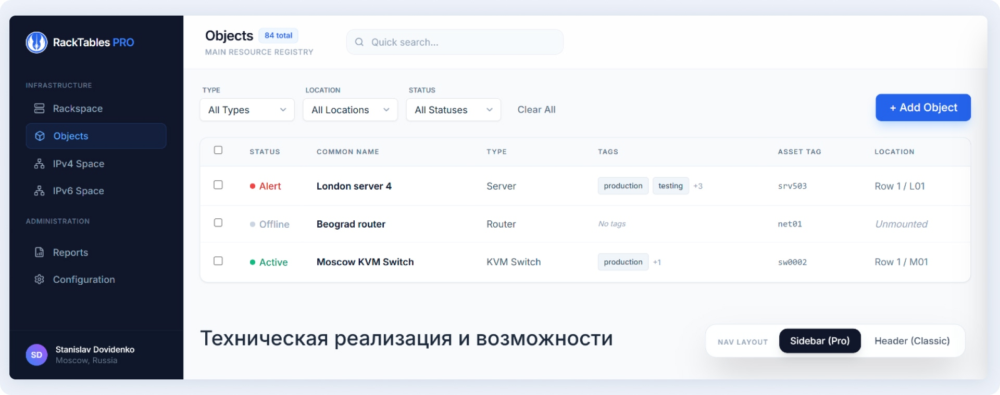
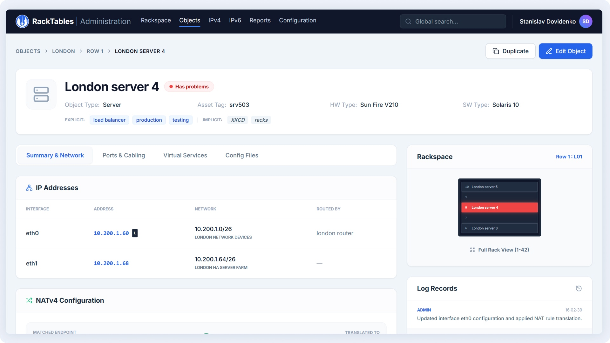
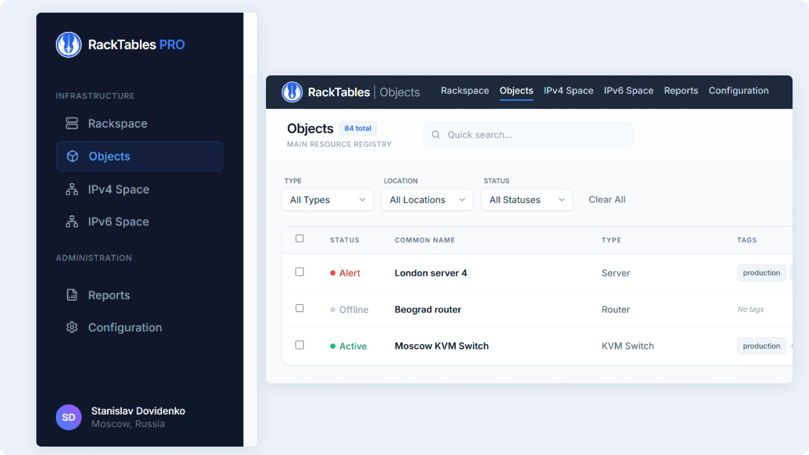
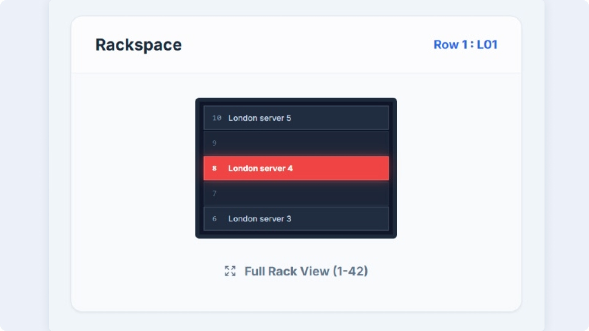
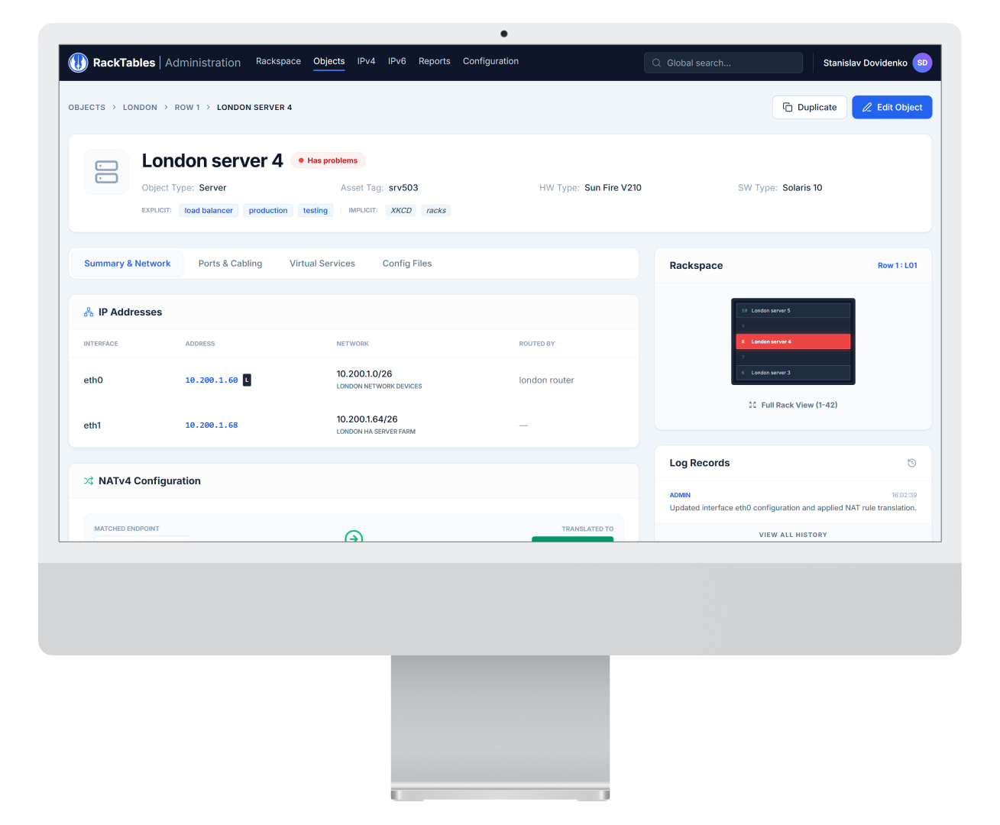

RackTables Redesign: Taming Complexity
Role
Product Designer / Frontend UI
Focus
Information Architecture, Cognitive Load Reduction, Layered Data Design.
Context
Transforming a historically complex legacy data center tool into a product with Consumer-grade UX.

Key Visual
Industry standard. A new perspective on infrastructure management.
🎯 Redesign Impact
-
•
Visual Noise Reduction: Abandoning solid row colors in favor of semantic tokens significantly accelerated status scanning.
-
•
IA Optimization: Consolidated 13+ fragmented tabs into 4 logical hubs using Progressive Disclosure.
-
•
Scalable Navigation: Resolved structural conflicts by separating global and local menus.
-
•
Live Prototyping: Translated mockups into live HTML/Tailwind code to validate data density directly in the browser.
The Problem: Cognitive Barrier
The original RackTables interface was designed akin to a raw database dump. Engineers faced extreme information density with absolutely no visual hierarchy. Chaotic color coding, broken scanning patterns, and redundant navigation forced users to waste critical time searching for statuses instead of actually solving the problem.

Fig 1. "Before" Analysis: Color noise, broken F-patterns, and an overloaded tab panel.
Direct Quotes: Engineers' Pain Points
"My eyes scatter. The entire table is flooded with red, yellow, and gray. Tags are written in tiny text right below the server name, causing the column height to jump unpredictably."
"To figure out which NAT rules are applied to a server and what pool it's balanced in, I have to click through three different tabs, losing all surrounding context."
Solutions & Architecture
1. Object Registry: Restoring Vertical Rhythm
I stripped away the "visual clutter" in the main list. Disruptive row color fills were replaced with precise semantic status tokens (Alert, Active). Tags were extracted into a separate column as standalone badges, and filtering was transitioned to a horizontal Faceted Search format, freeing up 25% of the screen width.

Fig 2. Data Grid: Focus on name readability and rapid status scanning via peripheral vision.
2. Data Layer: Network Hub & VS Groups
On the object details screen, I eliminated the 13 scattered tabs. Instead, a unified logical flow was established: from physical interface (IP) to routing (NATv4) and load balancing (VS Group). This enables the engineer to trace the traffic path instantly. For NAT rules, I implemented directional visualization (arrows) instead of dry data columns.

Fig 3. Grouping of network dependencies and elevation of critical alerts into the Hero header.
3. Resolving Navigation Conflicts
The original system suffered from a clash between global menus (database level) and local menus (server settings). I designed two scalable global navigation patterns tailored for diverse enterprise needs: a Collapsible Sidebar (for deep hierarchical nesting) and a Top Mega Menu (to maximize horizontal workspace).

Fig 4. Structural variant featuring the left Sidebar Pattern.
4. Rack as Context (Mini-map Mode)
The "Rackspace allocation" block was entirely reworked. To prevent it from stealing focus away from critical network settings, I transitioned it into a "dark mini-map" mode. Engineers can always see exactly where a device is physically located (e.g., Unit 8), but the visual weight of the block is pushed to the background.

Fig 5. Sidebar rack widget acting as secondary context, not distracting from troubleshooting.
Live Prototype (Tailwind CSS)
Static mockups fail to capture the true feel of table interactions and scrolling. To rigorously test data density hypotheses, I built an interactive frontend prototype using AI (vibecoding). The code is written in Tailwind CSS, fully responsive, and integration-ready.
View Live Prototype
Reflection: Engineers Deserve Consumer-Grade UX
Enterprise product design often devolves into a struggle to cram as many inputs as possible onto a single screen. This case study demonstrates that even rugged infrastructure tools like RackTables can be elegant and intuitive.
The secret isn't just "making it pretty"—it’s about architecting the underlying decision-making logic. By establishing a clear hierarchy (Physical Layer → Network → Load Balancing Logic) and eliminating visual noise, we drastically reduce incident response times. Data no longer obstructs the workflow; it empowers it.